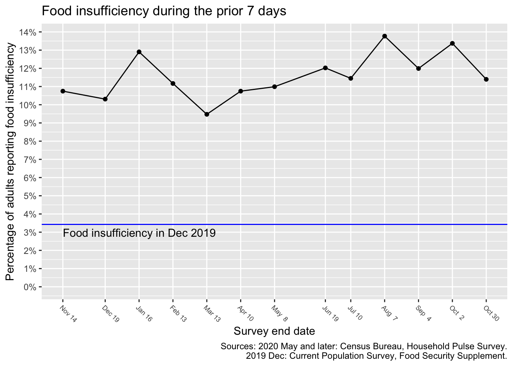
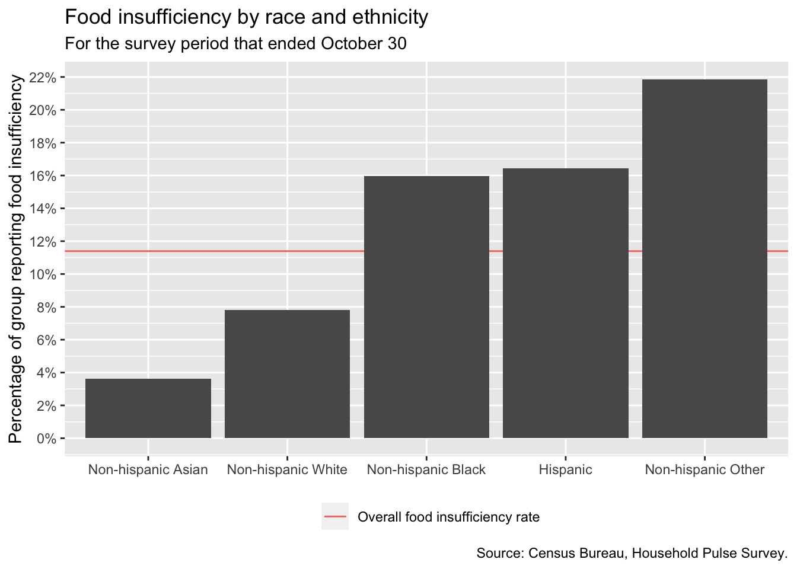
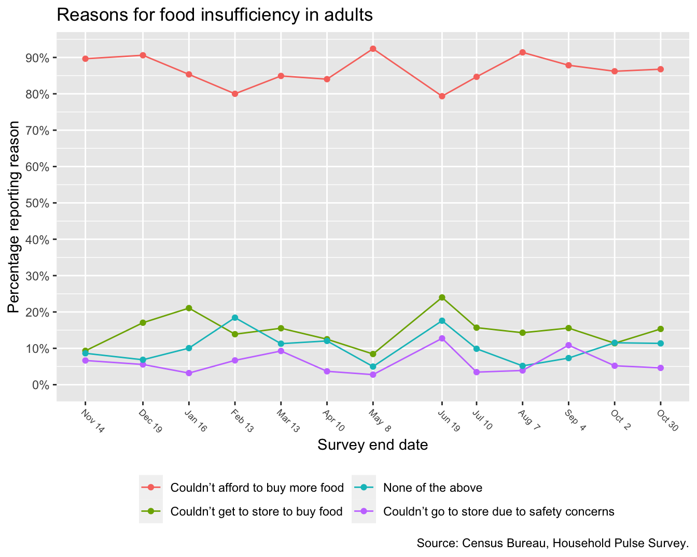
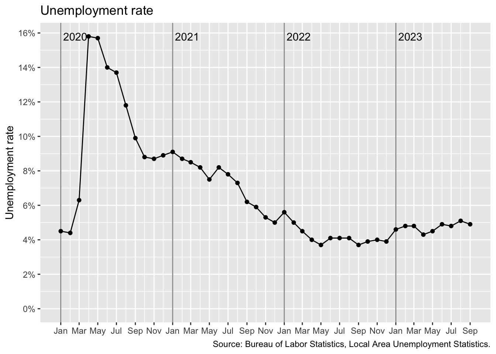

Overview
The data on this site is derived from the U.S. Census Bureau Household Pulse Survey (HPS) and the U.S. Bureau of Labor Statistics Local Area Unemployment Statistics (LAUS). New HPS data is released once a week, and new LAUS data is released once a month. The most recent data used for this report are:
- Household Pulse Survey: June 11 - June 16
- Local Area Unemployment Statistics: April
The HPS releases data in two stages. For this reason, some time series below run through June 9, while others run through June 16.
This report updates upon the release of new data. Sign up with this form to be notified of updates. All data used in this report can be found and downloaded here. All code used to download and process the raw data and to generate this site can be found here.
If you have any feedback, comments, or suggestions for improvements to this site, please email us.
Food insufficiency
Rate over time
The plot below contains the percentage of adults who answered this question:
In the last 7 days, which of these statements best describes the food eaten in your household?
with one of these two answers:
Sometimes not enough to eat
Often not enough to eat

In the most recent survey period that ended June 16, an estimated 11.7% of California adults, or approximately 3,550,000 adults, lived in households with food insufficiency.
The HPS was not designed to measure food insufficiency in children, but other surveys typically find food insufficiency rates among children to be substantially higher than among adults.
Geography
The map below is for the survey period that ended June 16. Hover over counties for rates.
Estimated from: Census Bureau, Household Pulse Survey.
Bureau of Labor Statistics, Local Area Unemployment Statistics.
These food insufficiency estimates for Californias counties are based upon a model. The model uses the food insufficiency rate for the entire state and the county unemployment rates to estimate food insufficiency for each county.
County unemployment rates are updated every month, but state-level food insufficiency is updated every week. Each months unemployment data also comes out later than the food insufficiency data. For months where unemployment data is not yet available, the model uses the latest month for which data is available.
Demographics



In the above, Hispanic refers to individuals of any race. White, Black, and Asian refer to individuals of that single race. And Other refers to individuals of two or more races, or races other the White, Black, or Asian.
Reasons

The above plot contains the reasons respondents gave for selecting Sometimes not enough to eat or Often not enough to eat. Respondents can choose more than one reason, so the percentages sum to greater than 100%.
Severity

Free groceries or meals


Since respondents can choose more than one source of free groceries or free meals, they sum to greater than 100%.
Unemployment
Rate over time

The data for the most recent month is typically preliminary and subject to revision when the following months data is released.
Geography
The map below is for April. Hover over counties for rates.
Source: Bureau of Labor Statistics, Local Area Unemployment Statistics.